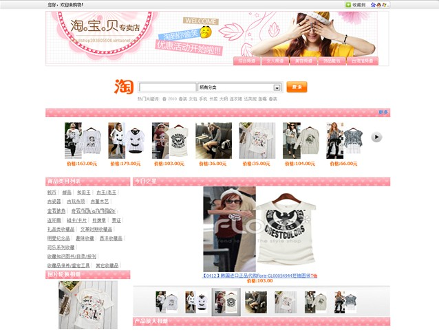
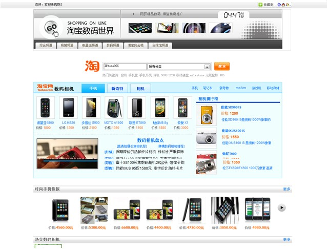

|
新淘网介绍 引言： 江湖传闻，在如今这血雨腥风的捞钱大军中，有一批神秘的力量，他们帮助淘宝卖家推广商品，他们引导网购群体找到自己想要寻找的商品，在这一来一去中，他们赚到了数额可观的佣金，他们就是——淘…宝…客… 那些跟钱没仇的兄弟们，你们想成为他们的一员么，来吧，新淘网将带你进入精彩刺激的淘客世界！ 什么是淘宝客： “淘宝客”，又叫“淘客”，是指帮助淘宝卖家推广商品获取佣金赚钱的人。淘客推广是一种按成交计费的推广模式,淘宝客只要从淘宝客推广专区获取商品代码，任何买家（包括您自己）经过您的推广 (链接,个人网站,博客或者社区发的帖子)进入淘宝卖家店铺完成购买后,就可得到由卖家支付的佣金，最高佣金达商品成交额的50%。 淘宝客现状： ◇单品推广:淘客通过获取淘宝推广链接，然后通过各大论坛或个人博客等方式进行推广，用户如果点击该链接，则直接到淘宝卖家页面，如果用户之前没有心理准备，会从第一感觉上抵触购买这件事情。 ◇独立站点:需要购买域名、购买空间、自行建设或定做推广网站、搭建服务器，一是前期投资大，二是存在很高的技术门槛，除此之外，网站后期维护工作同样艰难，让很多想做淘客的新手或转型独立推广模式的淘客望而止步。 新淘网关键字： 快速拖拽建站、可视化建站体验、无需网页编写经验、无需推广商品收集经验！ 入驻新淘网： 欢迎您来到新淘网，请按照下面的步骤完成您入驻新淘网开始您全新的网赚生涯吧~入驻过程中会需要用到您的淘宝账号，请不要担心您的账号安全性，淘宝客佣金必须与淘宝账号进行绑定，这里我们只是将您的淘宝ID与您的推广网站进行绑定而已，至于您的账号密码等私密信息我们是无法获取的，假如您还没有淘宝账号，抓紧登陆淘宝网注册一个吧！ 新淘网独立推广网站展示：   |